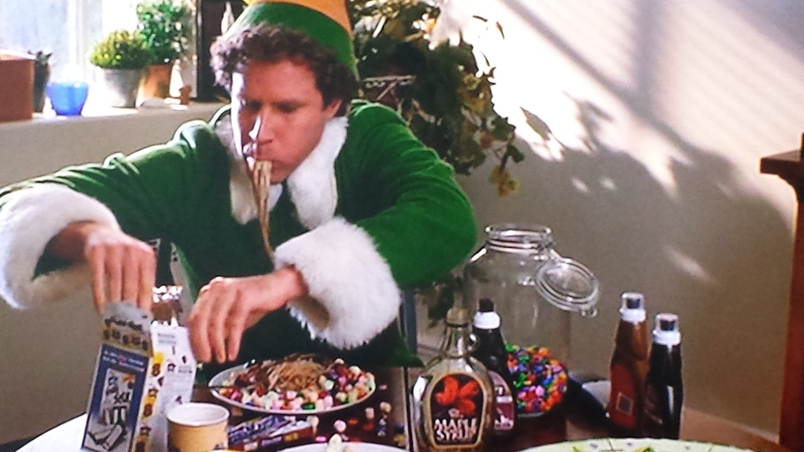

Breakfast Spaghetti

This is the famous breakfast of champions.
Buddys favorite food
Ingredients
- 1 Serving Spaghetti
- Red and green M&M's
- Mini marshmallows
- Sprinkles
- Chocolate Syrup
- Maple Syrup
- Pop tart
Steps
- Boil spaghetti according to the instructions on the box,
about 9-10 minutes. Drain it in a colander and plate it.
- Add M&M's (optimally red and green ones),
mini marshmallows, and rainbow sprinkles.
- Drizzle on chocolate syrup and maple syrup.
- Toast a chocolate fudge Pop Tart for toast.
- Enjoy the sugar rush